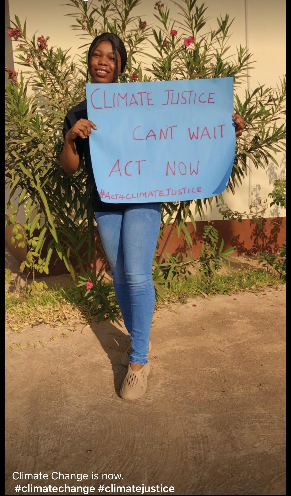
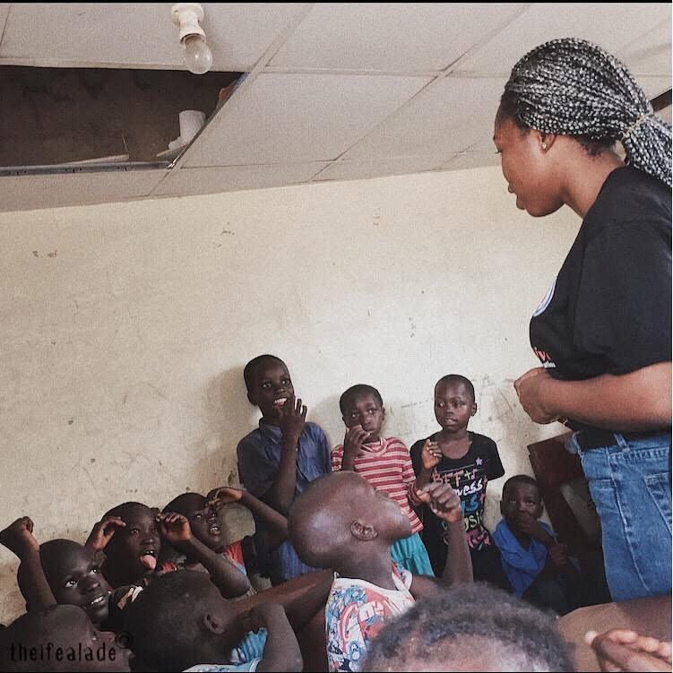
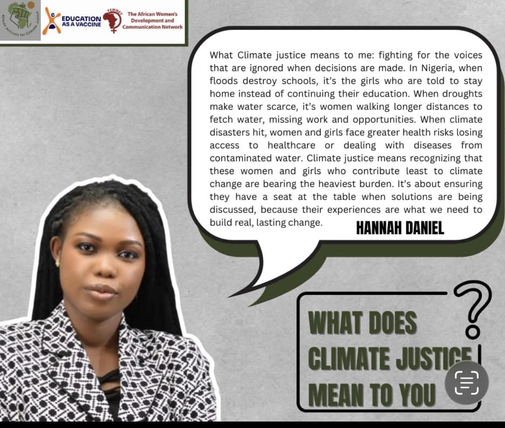
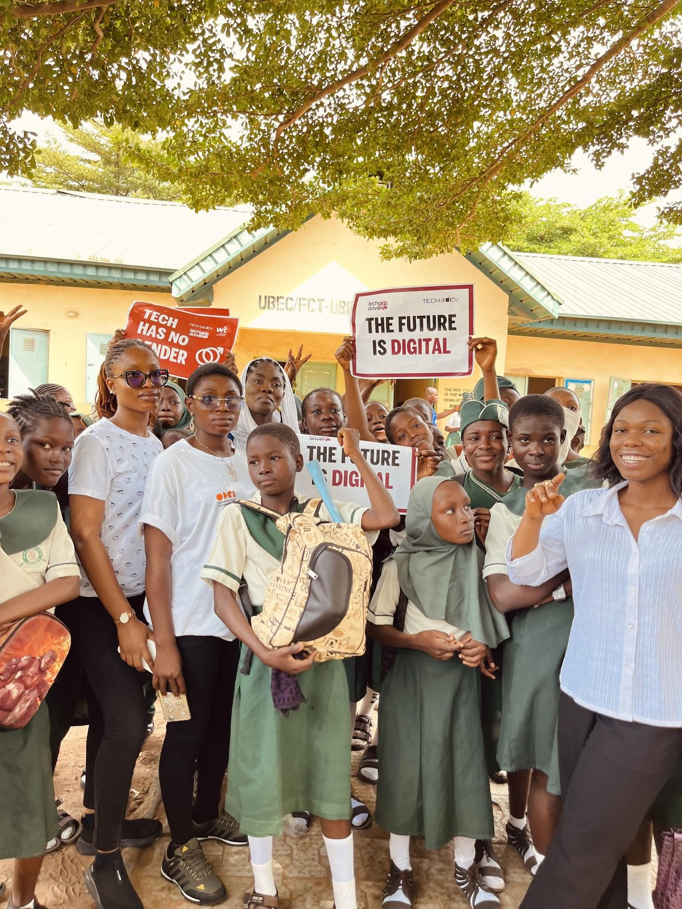
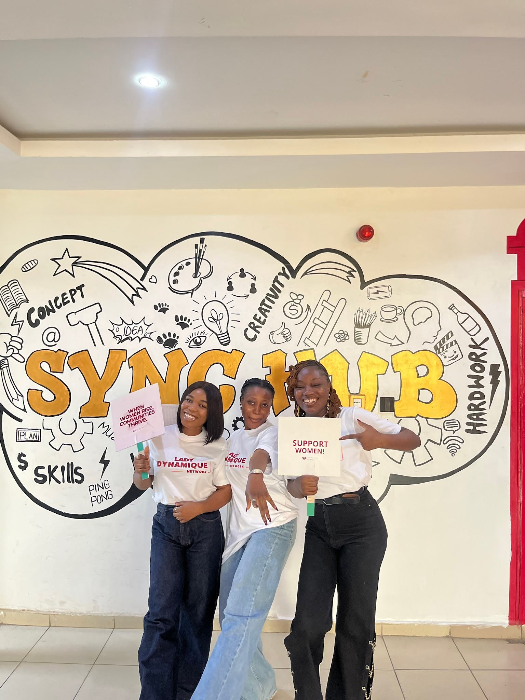
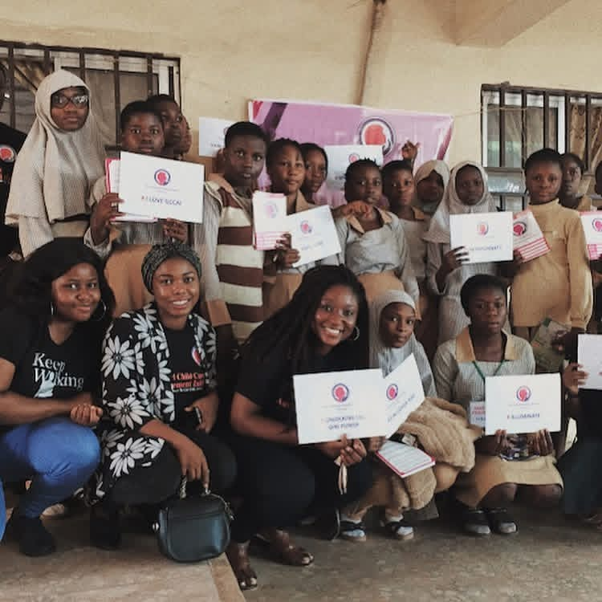
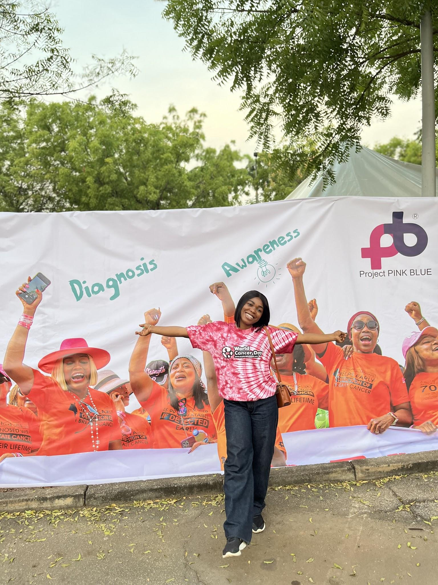
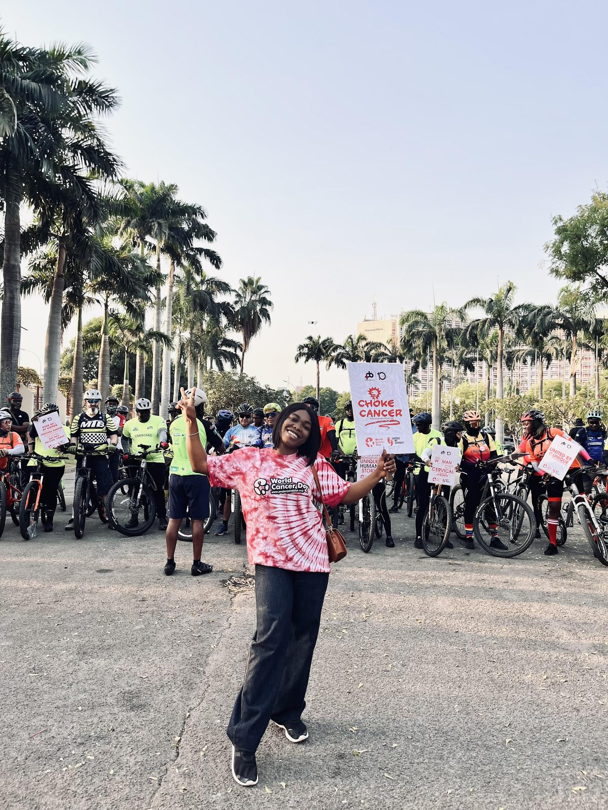
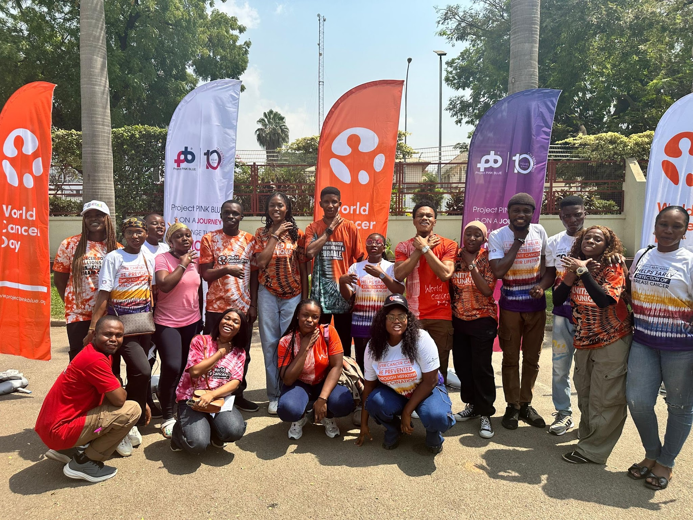

/ 06 Impact
The work I do is shaped by the people I meet.
Long before I became a UX researcher, I spent years listening to communities, volunteering, advocating, and creating spaces where people felt heard. Looking back, I realised I had been doing research all along—asking questions, understanding people's experiences, and helping shape better outcomes. Today, that same curiosity continues to guide both my work and the causes I care about.
Climate Justice
What started as advocacy became an opportunity to listen—to women, girls, and communities whose experiences often go unheard.



Girls & Community
Whether through mentoring, outreach or digital literacy programmes, I enjoy creating spaces where girls can learn and believe in what's possible.



Volunteering
Volunteering has given me opportunities to support causes I care about and contribute in ways that go beyond my day-to-day work.



Knowledge Sharing
Learning means more when it's shared. I enjoy breaking down research, tools and ideas into practical conversations that help others grow—just as many people have helped me grow.
I've supported people learning design by teaching and presenting on research and design fundamentals, helping them build the confidence and skills to grow in the field.
Looking Ahead
I'm still asking questions, still learning, and still building.
Right now, I'm exploring how research, storytelling, technology, and AI can work together to make climate education more relatable and accessible. I want to build experiences that help people understand how climate change affects everyday lives—especially women, girls, and vulnerable communities—while also exploring how AI can make learning, research, and educational content easier for more people to engage with.